Kepzeld ez itt
A történetünk...
1979
Balázs
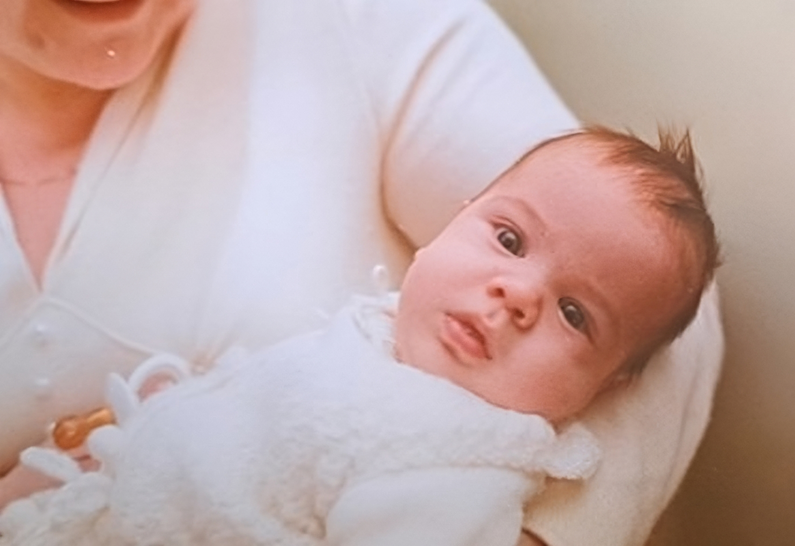
Balázs
Budapest, 1979. október 24. szerda 16:00
Megérkezett Kozári Balázs 54cm és 3500g
Bernadett
1980
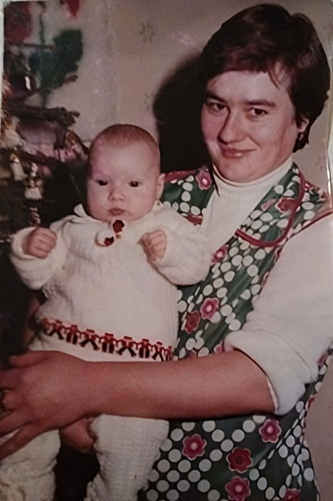
Bernadett
Dombóvár, 1980. szeptember 28. vasárnap 11:30
Megérkezett Mészáros Bernadett Beáta 47cm és 3500g
2000
Hajrá, Kérdezz! Felelek!
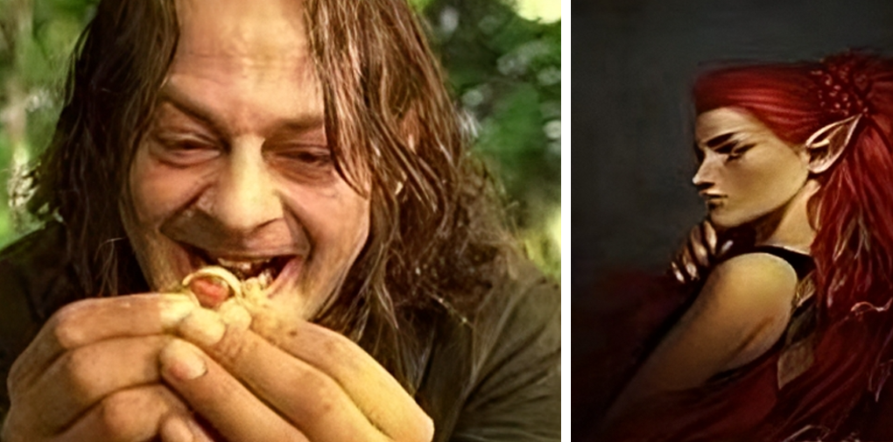
Hajrá, Kérdezz! Felelek!
Sok-sok „unalmas perc” a munkahelyen eredményezte a www.jatek.hu-n való egymásra találást.
Balázs: Smeagol és Bernadett: Kadra
Ákos
2004
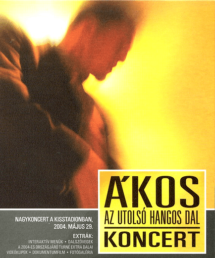
Ákos
Közös érdeklődés, közös kalandos koncerteket eredményezett országszerte
2007
Ábel
Ábel
Zalaegerszeg, 2007. január 10. szerda 7:30
Megérkezett Szamosfalvi Imre Ábel 52cm és 3350g
Találkozás
2011
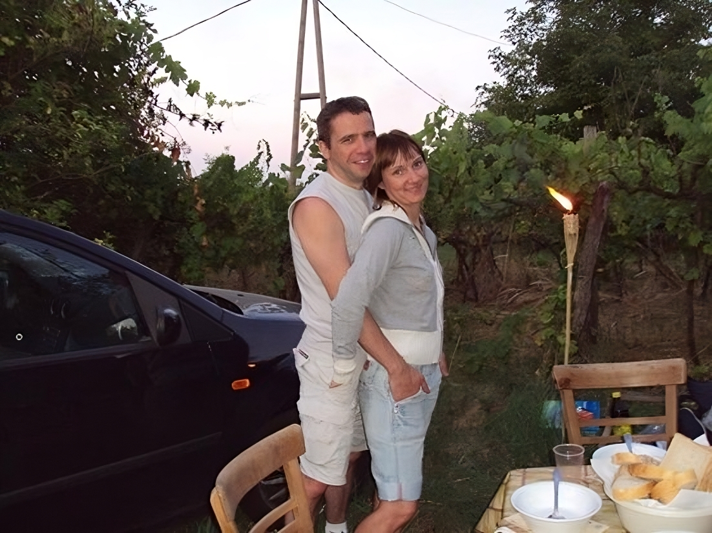
Találkozás
Néhány külön töltött év után, hirtelen felindulásból egy csodaszép május 13 pénteki napon egymásra találtunk
2012
Kristóf & esküvő
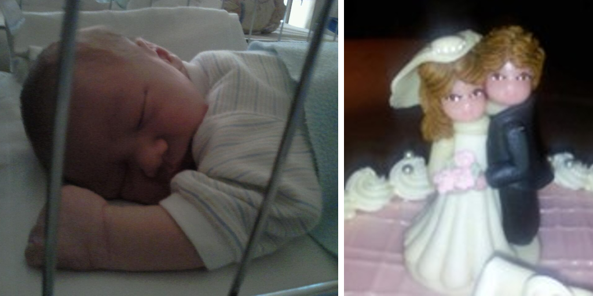
Kristóf & esküvő
Budapest, 2012. november 13. kedd 10:25
Megérkezett Kozári Kristóf 48cm 3250g
Esküvő Érd, 2012. október 20.
Első évünk
2013
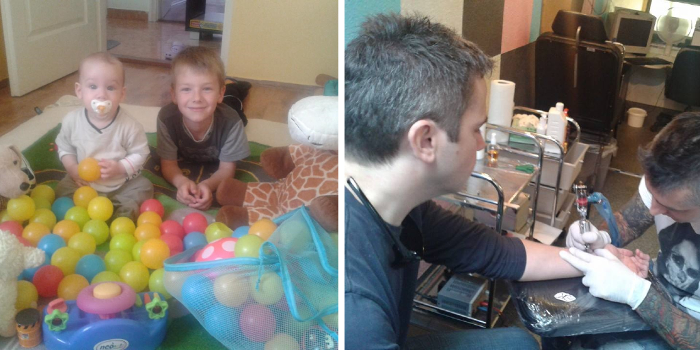
Első év
Első közös, kalandos évünk négyesben! Mindennapok, napirend, óvoda, ingázás, nyaralás! Elkészült az első tattoo Balázs csuklójára. „K” betű
2014
Folytatás
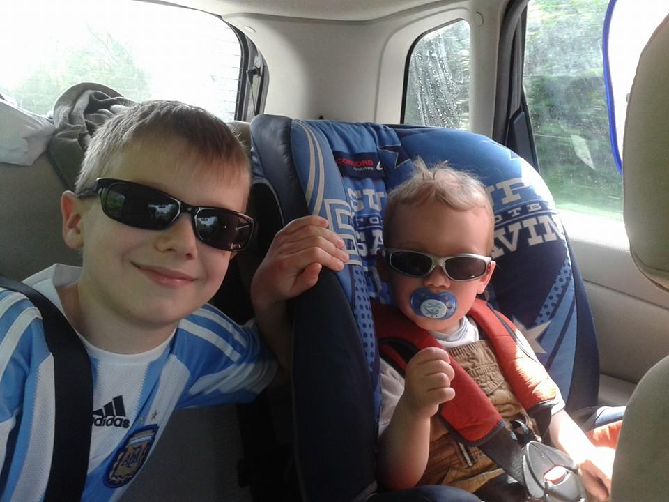
Folytatás
Belejöttünk! Kristóf megkezdte a bölcsit, Ábel megkezdte a sulit. Kaland folytatódik!
Rengeteg élmény
2015
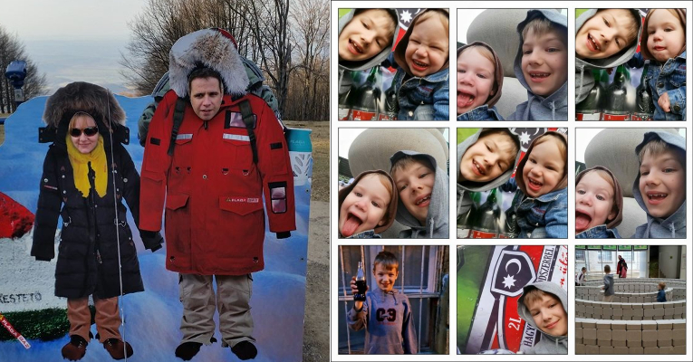
Rengeteg élmény
Kirándulások Kékestető, rendezvények Millenáris, határ nélküli móka! Minden nap egy élmény!
2016
Új korszak
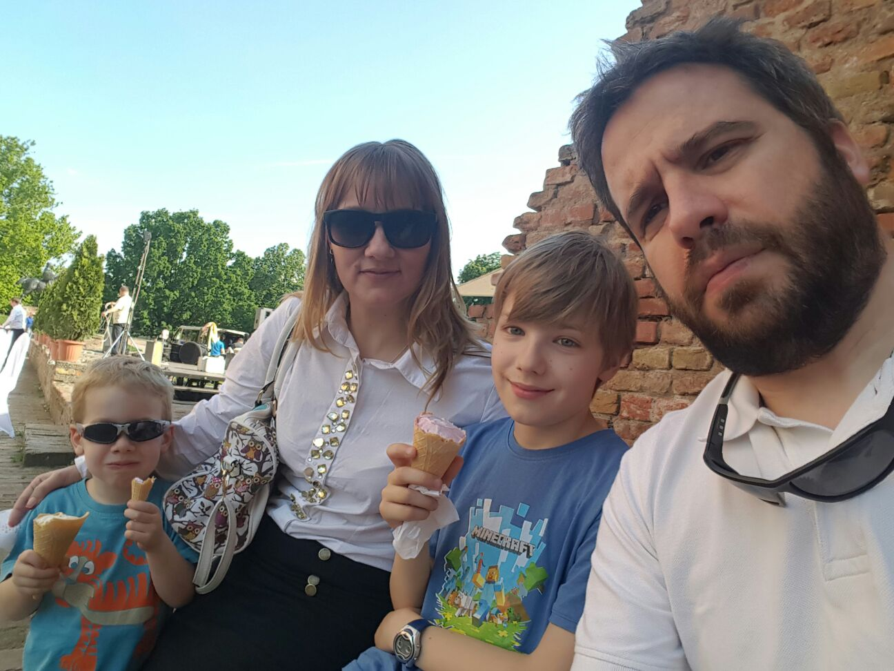
Új korszak
Sakkversenyek Ábellel, óvoda kezdés Kristóffal. Megkezdődött egy újabb korszak. Kirándulások, közös élmények folytatódtak! Gyártjuk az emlékeket!
Rengeteg öröm
2017
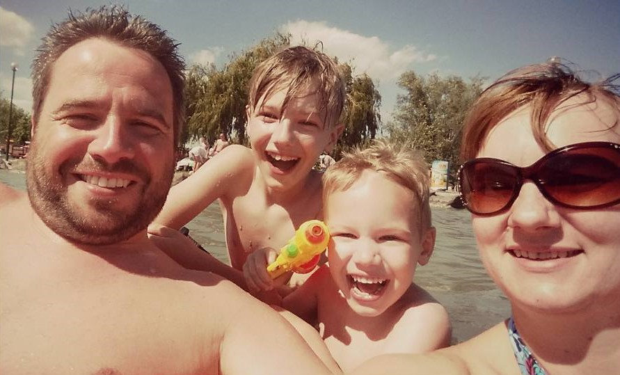
Rengeteg öröm
Süt a nap nehogy szomorú légy, lehetne százszor is rosszabb...
2018
Vidámság
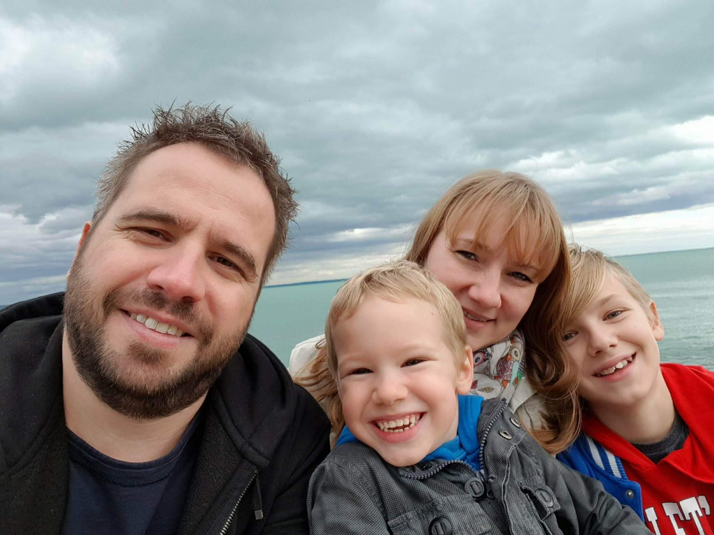
Vidámság
Állatokból sohasem elég Vadaspark, állatkert, nyaralás, iskola, óvoda, buli!
Új élmények
2019
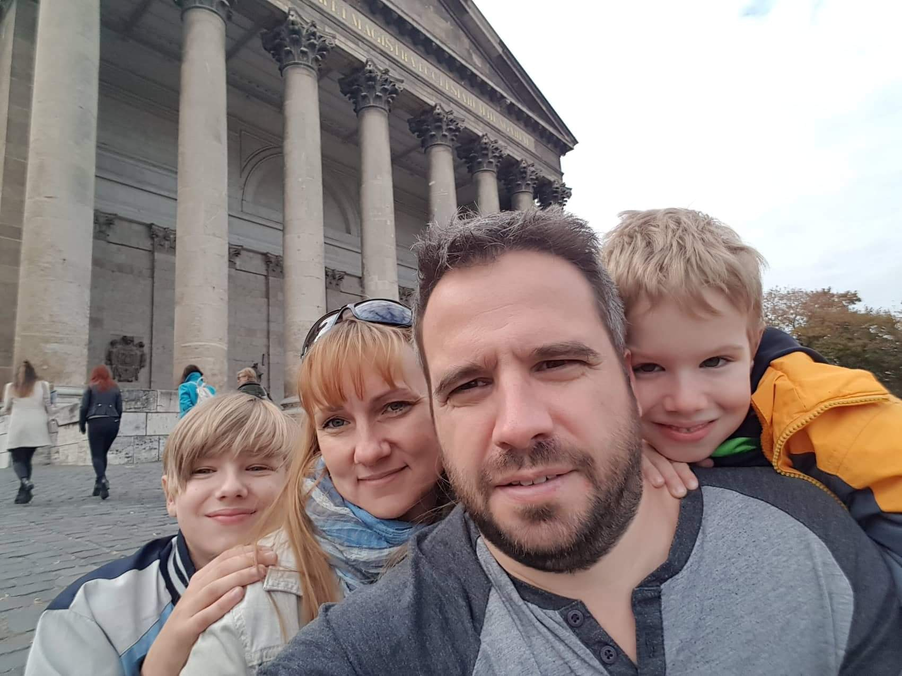
Új élmények
Esztergom, átsétáltunk a határon. Egész évben feszegetjük a határokat és egy nagy lépés...
Megérkeztek a nyuszik: Rozmaring és Sütemény
2020
Még csak 40
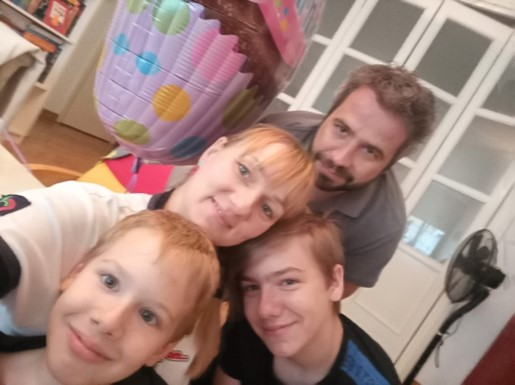
Még csak 40
40 lettem csendben... (Bernadett) Nem egyszerű az élet! Négyen mindenen át!
Már 10 éve
2021
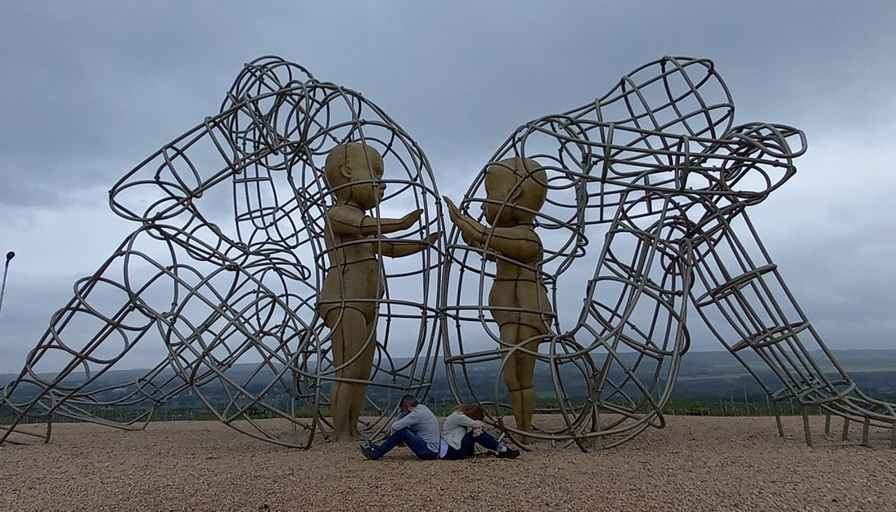
Már 10 éve
10 éve együtt ❤️
2022
Nincs megállás
Nincs megállás
Az élet nem áll meg és a fiúk nőnek, rohan az idő! Új időszámítás...
Nyaralás, középsuli, közeleg a felső tagozat!
Zadar jövünk
2023
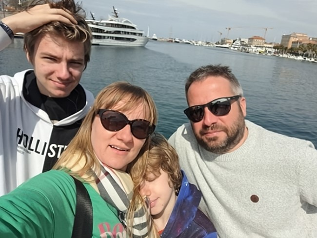
Zadar jövünk
A móka expressz soha nem áll meg! Végre az első közös külföldi tavaszolás. Zadar avagy Húsvét kicsit másképp